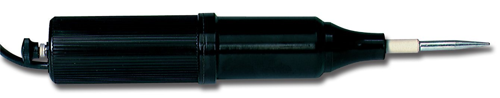

DIY REPAIR OF "BD-10" or "BD-20A" VIOLET WAND,
ETP VACUUM LEAK TESTER, QUACK TESLA COIL
2015 W. Beaty
|
 |
These handheld Tesla Coils from the 1950s are still being made today, and repair-parts are still available. Today they're commonly used in physics and chemistry labs, science classrooms, and also used for finding pinholes in plastic tank liners. They produce up to 50KVAC, create ozone and UV light, and are still found in use for skin treatments in some beauty parlors and barber shops. They originated in 1905 from the quack-medical arena, where they were claimed to cure everything from baldness to diabetes to cancer. Today (2015) the new ones cost $250 and up, but you can still find many antique versions on eBay. (After you've repaired one or two of these, you can buy cheap dead ones and get them working again.)
WARNING: DO NOT UNSCREW THE BROWN PLASTIC CASE! Doing so will twist and tear the HV coil wires, possibly destroying it.
Common failures
- No buzz when knob screwed in. Bad cord? Or, the contacts have eroded down, and the screw no longer pushes them into contact. Disassemble, and replace a bad power cord. Or, simply remove some of the several visible plastic washers from below the knob, so it screws in further.
- Buzz, but no sparks. In antique (non-ETP) models, usually its a melted wax capacitor. Make a DIY replacement, or buy from ETP. Read Hints from Electrotherapy Museum
- Knob won't turn. Ozone damage has corroded the threads and frozen it in place. You might try unscrewing the brown knob, dosing the threads with penetrating oil, and then using a 7/32 wrench to turn the threaded brass. This may simply break off the threaded steel tube! It's only pressed into the internal steel plate, not soldered or spotwelded.
- Other problems? See Electrotherapy museum info, and a typical schematic.
{kind=link}
Secrets of disassembly
- DON'T try to unscrew the two halves of the plastic case.
- Pull out any HV attachment on the end (socket may be corroded.)
- Make or buy a custom 5/16 (or 8mm) nut-driver
- Remove the nut found deep inside the HV socket on the end
- Remove (unscrew) the plastic adjustment knob from its brass screw [1]
- Dig out the brown sealing wax from two brass screws on the flat base
- Remove the two screws
- Now it's safe to unscrew the entire Bakelite upper half
- Push out the buzzer assembly. Be careful not to break thin wires between two coils [2]
Custom nut-driver
The small nut inside the HV socket is 5/16", 8mm driver. However, the
inside
diameter of the HV socket is 0.43", a bit under 7/16", much narrower than
any nutdriver
tip's OD. This custom tool can be bought from
Electro-Technic, or you can make your own by grinding down a standard
5/16" nutdriver's tip to under 0.42" 0.D.
Plastic adjustment knob
LOST KNOB? Simply buy any similar knob intended for a 1/8in potentiometer
shaft, then drill out to 0.161 with a #20 bit, and use as normal. The
style with two set-screws is best. Or, if
you really want the original setup, you can use an 8-32 tap to thread the
1/8" hole found on a conventional knob.
[1] The 8-32 threaded plastic knob on the adjustment screw is
sometimes too tight to remove. Try turning it fully CCW (all the way
out,) then twist hard so the plastic knob unscrews from its threaded post.
If it's more than finger-tight, you'll need thin needlenose pliers or a
small 11/64 wrench. Use one of these to grasp the flatted brass
screw-shaft below the knob, then twist the knob CCW by hand or with pliers
padded with paper towel. Don't squeeze the bakelite knob too hard!
Main Assembly Stuck!
[2] Sometimes
the
main assembly will not budge from the bottom plastic cylinder. It's a
common failure in the antique versions: the wax capacitor adjacent to the
120V buzzer drive-coil has melted, and glued itself to the inner surface
of the Bakelite. Often it's possible to force a thin steak knife into the
gap between the plastic and the wax glob. Work it along until you can
pass the knife entirely around the main assembly. That frees it up.
HOW IT WORKS
See a typical schematic.- The AC drive on the lower coil will keep the small iron slug vibrating.
- First, the vibrating contacts are open. This lets the AC supply-voltage momentarily charge the wax capacitor, max 160V at peak. The vibrator coil is in series, so the current and magnetism is building up there.
- The vibrating contacts close. This connects the wax capacitor to the few-turns Tesla primary. A large oscillating impulse appears, with path through the wax capacitor and the Tesla coil primary.
- With the contacts closed, the Tesla primary is providing a 60Hz path between the 120VAC power supply directly to the vibrator coil (since the Tesla primary acts like a short circuit for 120VAC. It's inductance is tiny. The series-capacitor is shorted out.)
- The AC drive then kicks this coil, keeping the vibrating contacts going.
- The high-freq oscillation in the Tesla coil primary is driving the Tesla coil secondary. Extreme high voltage appears between the AC neutral wire and the hollow metal connector in the end of the device.
- The high-freq HV oscillation dies away. The contacts open. This time there was a large current in the vibrator coil, so with open contacts removing the short, the coil dumps its stored inductor energy into the capacitor, charging it well above 160V.
- The cycle repeats, but this time with much higher voltage on the wax capacitor.
- [Note that the AC line has a direct metal path to the Tesla coil terminal. If the AC hot and neutral connections got reversed, any metal object stuck in the socket becomes a 120VAC electrocution hazard!]
A BIT OF HISTORY
These are the last of the quack-medical violet wands, the Bleadon-Dun "BD" Model Ten "Violetta." The brown phenolic case even still reads BD-10. These were saved from the 1951 FDA-banning, because all kinds of professional scientists and neon signmakers were using them to ignite plasmas in glassware, detect pinhole leaks in vaccum systems, or to serve as an inexpensive pre-built Tesla Coil for various instrumentation and in university classrooms. After Bleadon Dun Inc was no more, Electro-Technic products, Welch Scientific, and Chicago Electric Scientific Co. were selling them. Yet, the "alternative health" pamphlets for BD-10 can still be found, with claims to be cures for alcoholism, arteriosclerosis, cancer, TB, diabetes, deafness, epilepsy, whoopig-caugh, warts, and of course brain-fag (fatigue.)Here's the first one, the B & B Coil of 1905, only $250 (so, over $7000 in 2015 dollars)
{kind=link}
LINKS
- Disassembling a Violet Wand
- Electro-Technic products vacuum-testers
- DIY Violet ray devices from The Electrotherapy Museum
- Edu. Innovations $220 (in 2015)
- Quartzy lab suppl $234 (in 2015)
- Flinn Sci. $234 (in 2015)
- Litton Glass $223
- Nbond plasma $210
- Cesco BD-10 Late-model historical pamphlet
- Bleadon-Dun Violetta Early pamphlet 1923
- Violet-wand Misconceptions
- Holo-electron (France)
- AMA historical fraud guide